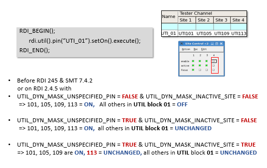
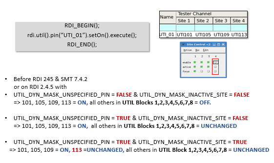

Sequencer Controlled Utility Mask with SmartRDI
SmartRDI supports mask mode of sequencer‑controlled utility lines.
Based on the utility mask capability in SmarTest 7.4.2 for the sequencer‑controlled utility lines, SmartRDI 2.4.5 is enhanced to keep the states (mask) of:
- unspecified utility bits in a command
- the utility bits of inactive sites
Two new flags in the RDI_Configure file work together to control the behavior:
- UTIL_DYN_MASK_UNSPECIFIED_PIN
=TRUE/FALSE- FALSE: Unspecified utility pins in the same control pattern will be set to OFF (default)
- TRUE: Unspecified utility pins in the same control pattern will KEEP their states
- UTIL_DYN_MASK_INACTIVE_SITE
=TRUE/FALSE- FALSE: Utility pins on inactive sites will STILL be changed by pattern (default)
- TRUE: Utility pins on inactive sites will NOT be changed by pattern
Note UTIL_DYN_MASK_INACTIVE_SITE can be set to
TRUE only when UTIL_DYN_MASK_UNSPECIFIED_PIN is set to
TRUE.
Note The mask feature for the sequencer‑controlled utility lines requires the FPGA
version 0xA2 of the wiring board. The FPGA bundles 4.015 provides the mentioned version.
In SmartRDI 7.6.0, a wait time can be added to pins in Pin Configuration
for sequencer‑controlled utility pattern. A wait pattern will be generated after relay switching.
If there are multiple pins in one SmartRDI command, SmartRDI chooses the longest wait time to
use.
Note For existing test programs, this enhancement in SmartRDI 7.6.0 may cause
those test programs with sequencer‑controlled utility failed. To keep compatibility with these
test programs, you can set UTILITY_SETTLING_TIME = FALSE in the RDI_Configure file.
Examples
Utility Mask with Unganged Configuration
Below is an example of sequencer‑controlled utility mask in an unganged configuration.

Utility Mask with Ganged (1-8) Configuration
Below is an example of sequencer‑controlled utility mask in an ganged configuration.

Functional changes
- Introduced in SmartRDI 2.4.5
- SmartRDI 7.6.0: Wait time can be added to pins in Pin Configuration for sequencer‑controlled utility pattern.